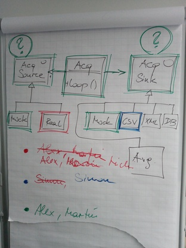

Python: Tour-De-Force (2022-11-07 - 2022-11-10, 2022-12-01)¶
Up Front: Project Management¶
Object Oriented Programming: Classes¶
Exercise Series: CSV¶
Missing Pieces: Encoding, Unit Testing¶
Unit Testing (
pytestvs.unittest)-
unittest sample suite (Private Github project)
pytest sample suite (Private Github project)
-
Exercise Series: CSV, JSON¶
Iteration, Generators¶
Iteration (Recap) (see notebook)
Generators, The
yieldKeywordGenerator Expressions
Operator Overloading¶
Going Dynamic: type(), exec()¶
type(),exec(). Revisit class dictionary, and buildclass Persondynamically. See demo here (Private Github project)
More OO: Inheritance, Abstract Base Classes¶
Group Project Kickoff¶
Data Structures Recap¶
Miscellaneous Livehacking¶
Subprocess
Documentation: subprocess — Subprocess management
Network programming
Function Arguments, Closures, Decorators¶
Exceptions, with¶
Package Management¶
Videos¶
Beginner¶
Python Quick Tip: F-Strings - How to Use Them and Advanced String Formatting, by Corey Schafer
Python Tutorial for Beginners 4: Lists, Tuples, and Sets, by Corey Schafer
Python Tutorial for Beginners 5: Dictionaries - Working with Key-Value Pairs, by Corey Schafer
Python Tutorial for Beginners 7: Loops and Iterations - For/While Loops, by Corey Schafer
Python Tutorial for Beginners 8: Functions, by Corey Schafer
10 Python Tips and Tricks For Writing Better Code, by Corey Schafer
Python Tutorial: Using Try/Except Blocks for Error Handling, by Corey Schafer
Advanced¶
Fun¶
Built in Super Heroes. David Beazley in an entertaining keynote to the “PyData Chicago 2016” conference. He has a number of very good and entertaining (and very advanced) videos. You have to spend an entire evening with him though.
Iterations of Evolution: The Unauthorized Biography of the For-Loop. David Beazley giving lessons in history. How
forevolved from the beginning until where we are today.The Fun of Reinvention - David Beazley - Pycon Israel 2017. David Beazley with an entertaining keynote about typing, type annotations, metaprogramming, contracts.
Keynote - David Beazley. David Beazley live coding a Web Assembly interpreter. PyCon India 2019.
David Beazley: Generators: The Final Frontier - PyCon 2014: David Beazley again a bit (a whopping four hours) more precise on that topic.